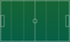

Total Games
–
Avg Points / Game
–
Top Scoring Team
–
Top 8 Scoring Teams
Defensive Strength (Points Conceded)
Shot Map
Plot of all shots by location. X/Y are on a 0–100 scale across the pitch.

Team Comparison
Compare two teams across key performance metrics.
Expected Points vs Actual
Game-by-game trends for a selected team.